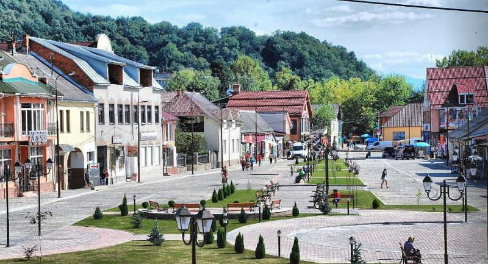
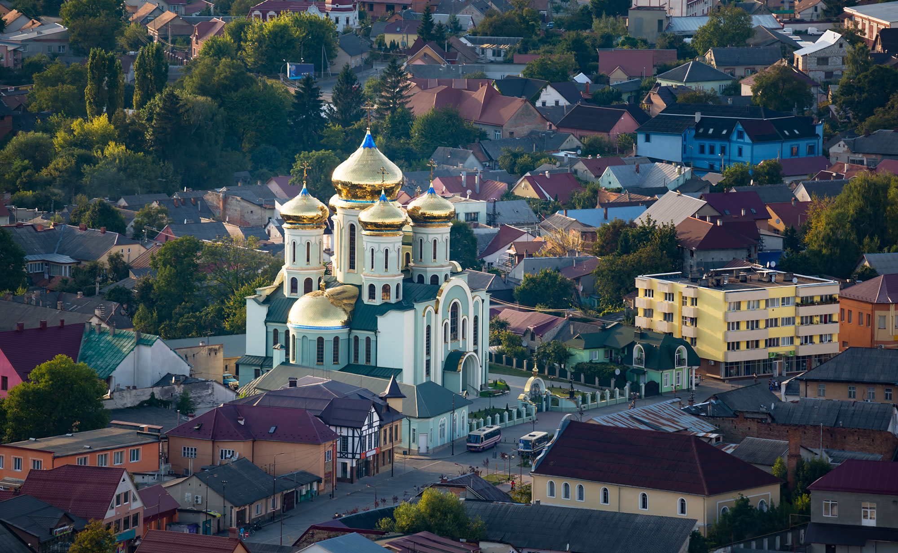

Ранок розпочинається з кави
Ранок пройшов дуже швидко. Прогулянка по місту додала натхнення на заняття версткою, вивчення нового. Настрій бойовий. У травневому місті - краса.
 День пройшов у вивченні нового матеріалу. Питань багато, не на всі знаходилась відповідь. Треба більш працювати!!!!
І ось вже наступив вечір. Заняття, заняття, заняття... Було цікаво.
А завтра новий день. Всім тихої спокійної ночі. До зустрічі.